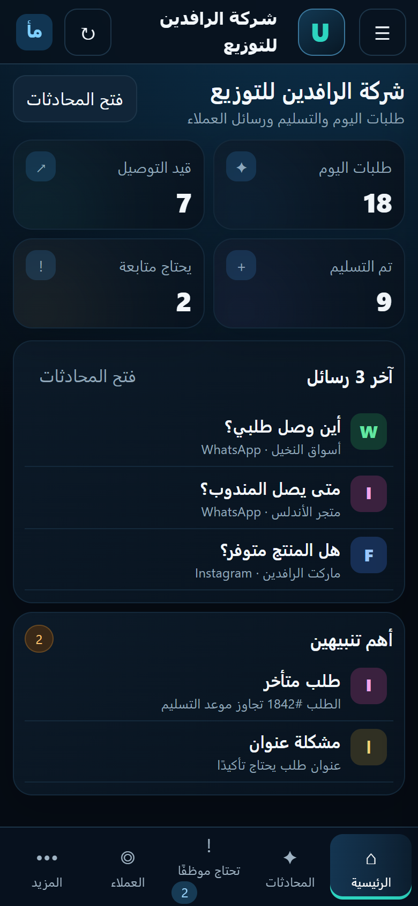
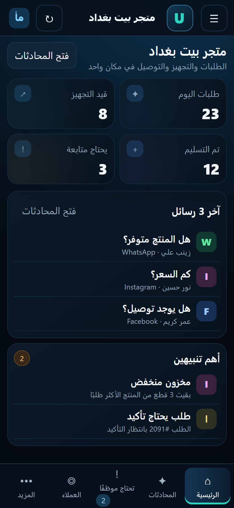
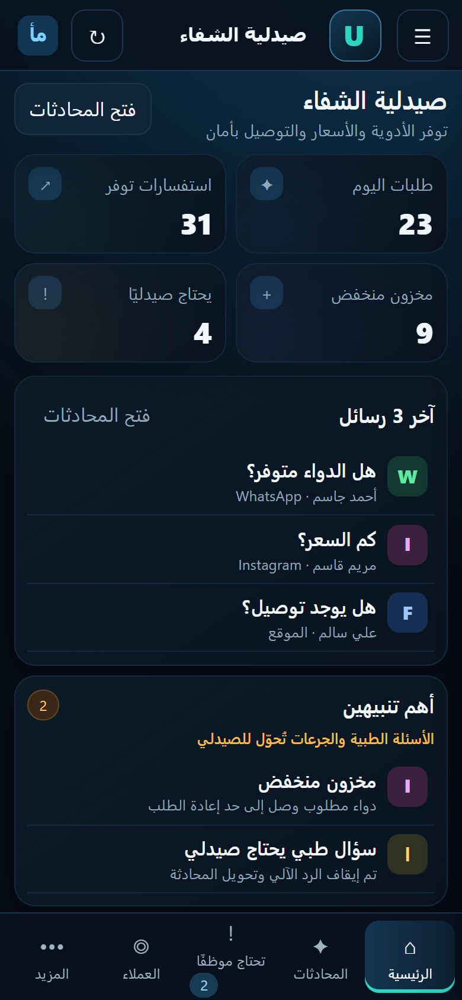

نظام يعمل باستمرار
العمليات المصممة للأتمتة يمكن أن تعمل دون انتظار الموظف في كل خطوة.
مبيعات · عملاء · WhatsApp · طلبات · مخزون · فواتير · تقارير · عمليات
URUKQI تساعد الأعمال في العراق على تنظيم التواصل مع العملاء والعمليات المتكررة داخل منظومة واحدة، مع الذكاء الاصطناعي والتدخل البشري عند الحاجة.
أنت لا تشتري مجرد Automation. أنت تحصل على منظومة مصممة حسب طبيعة عملك.
العمليات المصممة للأتمتة يمكن أن تعمل دون انتظار الموظف في كل خطوة.
نقل الأعمال المتكررة إلى مسارات آلية عندما تكون مناسبة لذلك.
قواعد واضحة وتدفقات منظمة بدل النسخ والإدخال اليدوي المتكرر.
تنبيهات وتقارير وبيانات منظمة تساعدك على معرفة ما يحدث.
رسائل تتأخر في الرد، عملاء لا تتم متابعتهم، أسئلة تتكرر، وطلبات تحتاج متابعة يدوية، بينما المعلومات موزعة بين WhatsApp وExcel والدفاتر والأنظمة المختلفة.
لا توجد متابعة منظمة لكل شخص أبدى اهتمامًا بمنتجك أو خدمتك.
عملاء اشتروا منك سابقًا ثم اختفوا دون أي محاولة منظمة لإعادتهم.
WhatsApp وInstagram والهاتف والموظفون يجعلون الطلبات صعبة المتابعة.
الموظف يكرر الإجابات نفسها طوال اليوم بدل التركيز على الحالات المهمة.
تكتشف نقص المنتجات أو قرب نفادها بعد فوات الوقت المناسب للتصرف.
إرسال الفواتير والتذكير بالدفعات والتحصيل يستهلك وقت الفريق.
البيانات موجودة لكن جمعها وترتيبها وتحويلها إلى تقرير يحتاج جهدًا.
الموظفون ينسخون المعلومات من نظام إلى آخر بدل أن تنتقل تلقائيًا.
عدم وجود تذكيرات منظمة قد يؤدي إلى تأخير أو عدم حضور العملاء.
لا يوجد مسار واضح يحدد من يفعل ماذا ومتى.
ملفات ورسائل ومرفقات كثيرة يصعب البحث فيها ومتابعتها.
المعلومة المهمة تصل بعد أن تصبح المشكلة أكبر.
لا توجد رؤية واضحة لمسار العميل من أول تواصل إلى البيع.
الحملات والمتابعات والرسائل لا تعمل ضمن عملية واحدة واضحة.
البيانات موزعة ولا توجد لوحة واضحة تساعده على اتخاذ القرار.
بدل أن يتوسع النظام مع الشركة، تتضاعف الأعمال اليدوية معها.
السؤال الحقيقي هو:
اختر مجال عملك والمشكلة الأقرب إلى واقعك. هذا مجرد مثال أولي؛ الحل الحقيقي يبدأ بعد فهم طريقة عملك.
ثلاثة أمثلة من بيئات عمل مختلفة

متابعة الطلبات، التسليمات، العملاء، المندوبين والحالات المتأخرة.

طلبات، منتجات، أسعار، توصيل، مخزون ومحادثات العملاء.

توفر الأدوية والأسعار والمخزون والتوصيل، مع تحويل الأسئلة الطبية للصيدلي.
النماذج المعروضة لأغراض توضيحية وتستخدم بيانات تجريبية، وتُخصص المنظومة الفعلية حسب بيانات وعمليات كل نشاط.
من أول رسالة حتى الرد أو التحويل البشري وتسجيل المتابعة.
المنتج المتاح حاليًا هو Smart Customer Service System V1. أما القدرات الأخرى فتصمم كحلول إضافية حسب احتياج كل نشاط.
يجمع بيانات العملاء ويحول المتابعة من مهمة يدوية إلى عملية منظمة.
مناسب: الشركات · المتاجر · الخدماتمن العميل المحتمل إلى المتابعة ثم البيع، ضمن مسار واضح.
مناسب: فرق المبيعات · الشركات · التجارةتنظيم الطلبات القادمة من قنوات مختلفة وتحويلها إلى خطوات واضحة.
مناسب: المتاجر · المطاعم · التوزيعالتعامل مع الأسئلة المتكررة وإيصال الحالات المهمة إلى الموظف المناسب.
مناسب: معظم القطاعاتربط البيانات والتنبيهات لمساعدة الفريق على اكتشاف الحالات المهمة.
مناسب: المتاجر · الصيدليات · التوزيعتنظيم إرسال المستندات والتذكيرات والمتابعة المالية وفق قواعد العمل.
مناسب: الشركات · الخدمات · التجارةجمع البيانات وإنشاء تقارير دورية وتنبيهات تساعد على اتخاذ القرار.
مناسب: جميع القطاعاتتحويل المعلومات المتكررة من المستندات إلى بيانات قابلة للاستخدام.
مناسب: الشركات · المكاتب · المؤسساتعندما يحدث شيء مهم، يصل التنبيه للشخص المناسب في الوقت المناسب.
مناسب: العمليات · الإدارة · الفرقإذا كانت مشكلتك خارج الحلول الأساسية، نحلل العملية ونبني المسار المناسب.
مناسب: الشركات والمؤسسات ذات الاحتياجات الخاصةإذا لم تكن المعلومة موجودة أو كانت الحالة تحتاج قرارًا بشريًا، يتم تحويل المحادثة إلى موظف بدل اختراع إجابة.
الأسئلة الطبية والتشخيص والجرعات لا يتم التعامل معها تلقائيًا كبديل عن المختص، بل تُحوّل للصيدلي.
URUKQI ليست قالبًا واحدًا للجميع. نحدد ما تحتاجه بعد فهم عمليات نشاطك.
عملاء · طلبات · مخزون · متابعة · تقارير
مخزون · تنبيهات · طلبات · بيانات
طلبات · حجوزات · خدمة عملاء · تقارير
CRM · مبيعات · عمليات · تقارير
تكاملات · عمليات · بيانات · فرق متعددة
سير عمل · مستندات · موافقات · تنبيهات
مواعيد · رسائل · متابعة · تحويل للموظف
حجوزات · تذكير · عملاء · متابعة
طلبات · تسليمات · فرق · عملاء
استفسارات · فرص · متابعة · طلبات
نفهم طريقة عملك والمشكلة التي تواجهها على أرض الواقع.
نبحث عن العمليات المتكررة ونحدد أين يمكن للنظام أن يتدخل.
نصمم ونبني سير العمل ونربطه بالخدمات التي يستخدمها العميل.
نختبر المسارات الطبيعية وحالات الفشل قبل الاعتماد على النظام.
نضع النظام في العمل ونراقب سلوكه ونتائجه.
نضيف التحسينات والأتمتات الجديدة عندما يتغير احتياج العمل.
لا نطلب منك أن تصبح خبيرًا في الذكاء الاصطناعي أو الأتمتة. أخبرنا فقط بما يتكرر في عملك، وما الذي يضيع وقتك، وما الذي تريد أن يصبح أسهل.
نبحث عن العملية التي تسبب الهدر قبل اقتراح الحل.
نحاول الاستفادة من الأنظمة والأدوات التي يستخدمها العميل عندما يمكن ربطها.
نبني مع حالات نجاح وفشل ونخطط للمراقبة والتعامل مع الأخطاء.
يمكن تطوير النظام عندما تتغير طريقة العمل أو تكبر العمليات.
بعد تجهيز المنظومة، يتم ربط الرقم الرسمي مع صاحب النشاط من خلال إجراءات Meta الرسمية، وقد يتطلب ذلك تسجيل الدخول أو تأكيد الرقم أو الموافقة على الربط.
إذا فشل إرسال رد أو احتاج النظام تدخلًا بشريًا، يتم تسجيل الحالة وتحويلها للمتابعة بدل تجاهلها.
يتم تحديد مستوى الدعم ووقت الاستجابة في عرض الخدمة قبل بدء التشغيل.
كل عميل يرى بيانات نشاطه فقط.
لا. ينظم العمل المتكرر ويساعد الموظفين على التركيز في الحالات المهمة.
لا. يجيب من معلومات النشاط، وما يحتاج قرارًا أو معلومة غير مؤكدة يُحوّل لموظف.
يُحدد ذلك بعد فحص وضع الرقم الحالي ومتطلبات الربط الرسمي.
لا. الربط يتم مع صاحب النشاط عبر الإجراءات الرسمية، ولا نطلب كلمة المرور.
لا. لكل نشاط نطاقه وصلاحياته، ويرى كل عميل بيانات نشاطه فقط.
قد يكون ذلك ممكنًا حسب البرنامج وطريقة الربط التي يوفرها، ويُحسم بعد الفحص.
نعم، عند تشغيلها كخدمة مستضافة لا تعتمد على بقاء حاسوبك مفتوحًا.
الأنظمة القياسية عادة حتى 5 أيام عمل بعد اكتمال المتطلبات، والأنظمة الخاصة تُقدّر بعد الفحص.
جميع الباقات تُراجع حسب حجم العمل واحتياج النشاط قبل التفعيل.
التأسيس يبدأ من 200,000 د.ع
التأسيس يبدأ من 500,000 د.ع
إمكانات أوسع في:
التأسيس يبدأ من 1,000,000 د.ع
إمكانات أوسع في:
الباقات تخضع لحدود استخدام عادلة حسب حجم الرسائل والذكاء الاصطناعي والخدمات المرتبطة. أي رسوم خارجية استثنائية أو استخدام مرتفع لخدمات الطرف الثالث يتم توضيحه قبل التفعيل.
أخبرنا عن أكثر شيء يستهلك وقتك في عملك. وسنبدأ من المشكلة، لا من البرنامج.
لا تحتاج إلى معرفة أي مصطلح تقني. فقط أخبرنا بالمشكلة.